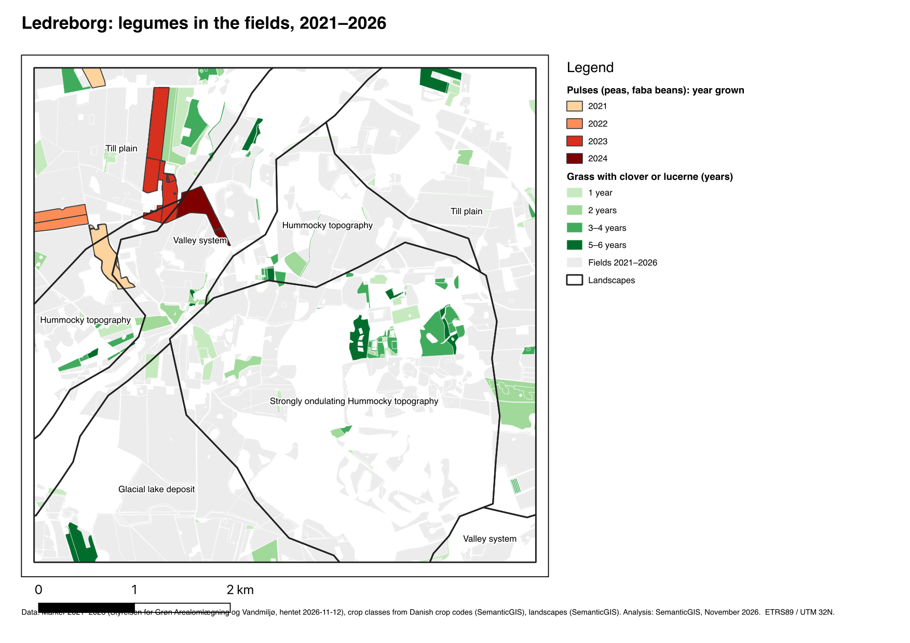
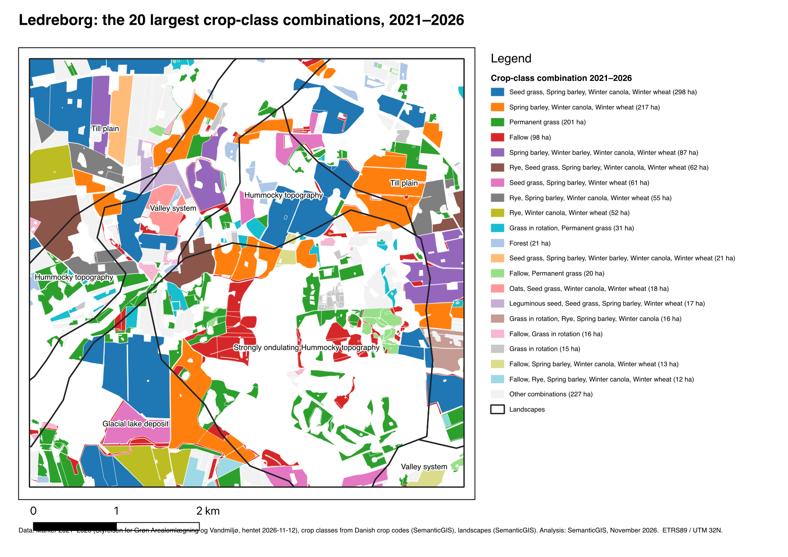

A worked case for the course Environmental Regulation and Management with GIS, Themes 3.1 (nitrogen in the agro-environment: pollution and regulation) and 3.2 (cultivation and food consumption). Companions: Vegetation greenness at Ledreborg (Example) (NDVI), Soil carbon and land use at Ledreborg (Example). Hub: Agriculture.
Within the Ledreborg landscapes, farmers declared about 1,520 ha of fields each year from 2021 to 2026, 56 % of the area. Most of it is in cereal–oilseed rotations: a third of the fields (515 ha) grew only winter wheat, spring barley and winter canola, with or without seed grass, in those six years. Legumes are rare. Pulses (peas and faba beans) were grown on 65 ha in all, each field in one year only, and on none in 2025 and 2026. Clover and lucerne, mixed into grass, cover 80–110 ha every year.
Example data
- Ready to use: ledreborg_crops_example_data.zip (1.5 MB), a snapshot package: Marker 2021–2026 as this example used it (clipped to the landscapes; the applicant’s identifiers left out), the landscapes, and the crop code table (
codelists/crop_codes_dk.csv), withsnapshot.jsonand a README. - Or fetch it yourself with Download snapshot series (step 2 below), for these years or others, and for your own landscape.
1. Spatial Intent
Question: which crops have the fields of the study area carried from 2021 to 2026, where are the legumes, and which crop combinations cover the most land? What does that mean for nitrogen leaching and for a regulation targeted at where leaching does the most harm?
Study area and zones: the five landscape types of the Ledreborg study area (Landscape delineation (Task)), 2,704 ha.
Units: the fields as declared each year; after flattening, pieces of land that keep their identity through the six years.
Theory: nitrate leaches when there is mineral nitrogen in the soil and water draining through it, which in Denmark is mostly from autumn to spring. A field with a growing crop in autumn and winter (winter cereals, winter canola, grass, catch crops) takes up nitrogen that a field left bare after a spring crop loses. Legumes fix nitrogen from the air: they need little or no fertiliser, but their residues and ploughed-in clover grass release nitrogen to the following crop, and to the drainage water if nothing takes it up. Danish nitrogen regulation has mostly been general: the same rules for all farmland in the country. Christensen et al. (2021) argue that further reductions need targeted regulation, planned in ecologically meaningful units: landscapes, where the same pattern of land use repeats across many farms, or watersheds, where the farms share the same recipient water. In their six case watersheds, farmers and other stakeholders built land-use scenarios with a GIS landscape tool that estimated leaching field by field from soil, hydrology, nitrogen retention and crop rotation. Mapping the crop rotations of a landscape, as here, is the first step of such a tool.
2. Auditing the data
| Data | Source | What it is | Choices |
|---|---|---|---|
| Fields and crops | Marker 2021–2026, WFS Marker:Marker_<year>, fetched 12 November 2026 | the fields farmers declared for EU area payments, with the crop code Afgkode | clipped to the landscapes; 2026 is preliminary |
| Crop classes | Data/Inner workings/Code lists/danish-crop-codes-afgkode | each code’s English name and a simplified class (acr_class, 25 classes) | the classes are a choice, made for teaching; see below for legumes |
| Landscapes | the example’s landscapes (Soil carbon and land use at Ledreborg (Example)) | five landscape types | as delineated for the Ledreborg examples |
What the data cannot say:
- Marker is what was applied for, not what grew; NDVI from a satellite image can check it (Vegetation greenness at Ledreborg (Example)).
- Catch crops and green cover after harvest are not crop codes in Marker; a winter NDVI image shows where the soil was green and where bare.
- The field boundaries are drawn anew each year and differ by a metre or two; flattening moves older boundaries onto the newest (2026).
- The simplified classes put clover grass and lucerne grass into Grass in rotation or Permanent grass. A legume map from the class alone shows only the pulses (class Leguminous seed). This example therefore maps the clover and lucerne from the English crop name as well.
3. The Analytical Schema
flowchart LR F[Fetch 2021–2026 for the landscapes] --> J[Codes to crop classes] J --> S[Area per class and year] J --> T[Flatten: one piece, one column per year] T --> C[Combination of classes per piece] T --> L[Years with legumes per piece] C --> M[Largest combinations: map and table]
| Task | Recipe | Operator families used |
|---|---|---|
| History from yearly snapshots (Task) | History from yearly snapshots (Recipe - QGIS) | Conversion and data management, Geometry restructuring, Overlay, Attribute calculation, Aggregation |
| Categories from register codes (Task) | Categories from register codes (Recipe - QGIS) | Attribute calculation, Selection |
Settings used
- Fetch (Download snapshot series): Series Marker, First year 2021, Last year 2026, Area the
landscapeslayer (all features), Buffer 0, Only features that touch the area on, Clip features to the area on, Output CRS EPSG:25832. 2,814 features (445–488 a year). - Crop classes (Join attributes by field value):
Afgkode=afgkodeof the crop code table; fieldscrop_enandacr_class; one-to-one. All 2,814 features matched. - Area per class and year (Statistics by categories):
$area / 10000, categoriesacr_classandsnapshot_year. - Flatten (Flatten snapshot series): Period field
snapshot_year, Fields to keepacr_classandcrop_en, Tolerance 2 m, Column prefixy. About 1,650 pieces, 1,559 ha; about 1,900 slivers merged on the way. - Combination (Combination of values): the six
y<year>_acr_classcolumns, field namerotation, without frequencies. 184 combinations. - Pulses, year grown (map):
CASE WHEN "y2021_acr_class" = 'Leguminous seed' THEN 2021 WHEN "y2022_acr_class" = 'Leguminous seed' THEN 2022 … END. - Years with clover or lucerne (map): one term per year,
if(regexp_match(lower("y2021_crop_en"), 'clover|lucerne') > 0, 1, 0) + ….
4. Results
Crops per year
Area (ha) per crop class within the landscapes:
| Crop class | 2021 | 2022 | 2023 | 2024 | 2025 | 2026 |
|---|---|---|---|---|---|---|
| Winter wheat | 330 | 319 | 347 | 438 | 454 | 361 |
| Spring barley | 300 | 269 | 189 | 228 | 259 | 313 |
| Permanent grass | 212 | 211 | 217 | 208 | 219 | 224 |
| Winter canola | 198 | 167 | 260 | 185 | 157 | 171 |
| Fallow | 139 | 141 | 147 | 158 | 158 | 153 |
| Seed grass | 169 | 171 | 133 | 27 | 118 | 23 |
| Rye | 48 | 87 | 77 | 148 | 55 | 40 |
| Grass in rotation | 51 | 49 | 91 | 76 | 66 | 65 |
| Winter barley | 32 | 52 | 0 | 0 | 0 | 63 |
| Oats | 6 | 21 | 9 | 11 | 4 | 40 |
| Forest (in fields) | 22 | 22 | 22 | 22 | 21 | 24 |
| Leguminous seed (pulses) | 16 | 11 | 27 | 11 | 0 | 0 |
| Corn | 5 | 5 | 8 | 8 | 7 | 9 |
| Spring wheat | 0 | 0 | 8 | 0 | 0 | 11 |
| Horticulture | 1 | 1 | 0 | 0 | 0 | 11 |
| Fodder beets | 1 | 1 | 1 | 1 | 1 | 1 |
| All fields | 1,529 | 1,528 | 1,534 | 1,520 | 1,520 | 1,509 |
Winter wheat, spring barley and winter canola take about half of the fields every year (49–57 %); the shares shift between them from year to year, as rotations do. Seed grass falls from 170 ha in 2021–2022 to about 25 ha in 2024 and 2026.
Legumes

| Pulses (peas, faba beans), any year | 65 ha, each piece in one year only |
| Pulses per year | 2021: 16 ha (faba beans 12, peas 3) · 2022: 11 ha (peas) · 2023: 27 ha (peas) · 2024: 11 ha (peas) · 2025, 2026: none |
| Grass with clover or lucerne, per year | 78–108 ha |
| Grass with clover or lucerne, any year | 195 ha; 18 ha in all six years |
Most of the pulses (40 of 65 ha) lie on the till plain in the north-west; the rest in the hummocky topography and the valley system. Clover and lucerne grass is found in every landscape, most on the till plain (91 ha) and in the strongly undulating hummocky topography (53 ha), where some fields keep it for five or six years.
The 20 largest crop combinations

| Crop classes 2021–2026 (unordered) | Area (ha) |
|---|---|
| Seed grass, Spring barley, Winter canola, Winter wheat | 298 |
| Spring barley, Winter canola, Winter wheat | 217 |
| Permanent grass | 201 |
| Fallow | 98 |
| Spring barley, Winter barley, Winter canola, Winter wheat | 87 |
| Rye, Seed grass, Spring barley, Winter canola, Winter wheat | 62 |
| Seed grass, Spring barley, Winter wheat | 61 |
| Rye, Spring barley, Winter canola, Winter wheat | 55 |
| Rye, Winter canola, Winter wheat | 52 |
| Grass in rotation, Permanent grass | 31 |
| …the 20 largest together | 1,332 (85 %) |
| 184 combinations in all | 1,559 |
95 % of the flattened area (1,477 ha) has a crop in all six years; the rest are pieces that were a field in only some years, mostly along edges.
5. Points for the discussion
- Winter cover. Winter wheat, winter canola, rye and winter barley (610–770 ha a year) are green through the winter; spring barley, oats and spring wheat (205–365 ha) leave the soil bare or in stubble from harvest to spring, unless a catch crop is sown. The winter NDVI the assignment asks for shows which fields were actually green; Marker alone cannot.
- Where to target. Arable rotations cover 81–88 % of the fields on the till plain and the glacial lake deposit, but only 41 % in the strongly undulating hummocky topography, where a third of the fields are grass. The landscapes are units of the kind Christensen et al. (2021) propose: each has its own pattern of land use, repeated across several farms. Combined with soil, drainage and the national nitrogen retention map (see Calculating permitted fertiliser with NUAR (Example)), the rotations show where changing a rotation, or taking land out of it, would reduce the load on the water the most. Their study also shows the limits: the stakeholders agreed that there was a nitrogen problem, but not on its size or on how to solve it, and a map like this is an input to that negotiation, not its answer.
- What is a legume? By the simplified classes there are 65 ha of legumes; with clover and lucerne grass, three to four times as much. The definition decides the map; record it (Categories from register codes (Task)).
- Unordered on purpose, and what it loses. The combination puts fields at different stages of the same rotation together, which is why the largest combinations are clear. It also drops the order: grass ploughed before a cereal, or a pulse before wheat, releases nitrogen in a particular year. For that, read the year columns of the flattened layer.
- Short histories. Six years is one or two rotations. Permanent grass in the table includes pieces that are permanent grass in every declared year, but a piece declared in fewer years gets the same label;
rotation_periodssays how many years a combination is based on. - Preliminary 2026. The 2026 layer is still being updated; the 2026 column will change.
- Boundaries. At a 2 m tolerance, about 1,900 slivers from re-digitised boundaries are merged away. Strips narrower than 2 m go too; wider fallow strips along the field edges stay, which is why thin red strips show along many fields on the map.
Sources
- Christensen, A. Aa., Andersen, P. S., Kjeldsen, C., Graversgaard, M., Andersen, E., Piil, K., Dalgaard, T., Olesen, J. E. and Vejre, H. (2021). Achieving sustainable nitrogen management in mixed farming landscapes based on collaborative planning. Sustainability 13, 2140. doi:10.3390/su13042140
- Marker 2021–2026: Styrelsen for Grøn Arealomlægning og Vandmiljø (earlier years published by Landbrugsstyrelsen), WFS geodata.fvm.dk, fetched 12 November 2026.
- Crop names and classes: Data/Inner workings/Code lists/danish-crop-codes-afgkode, SemanticGIS.